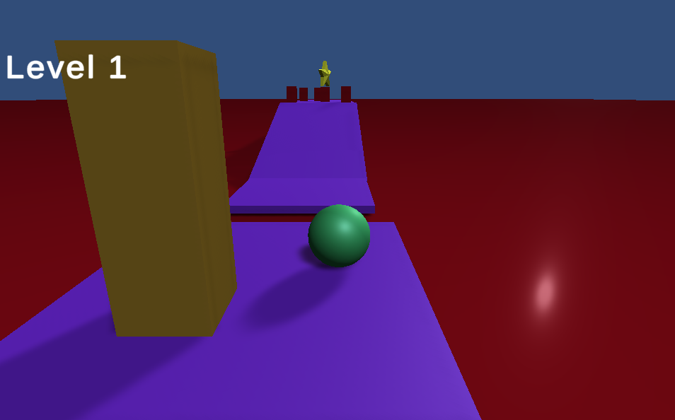
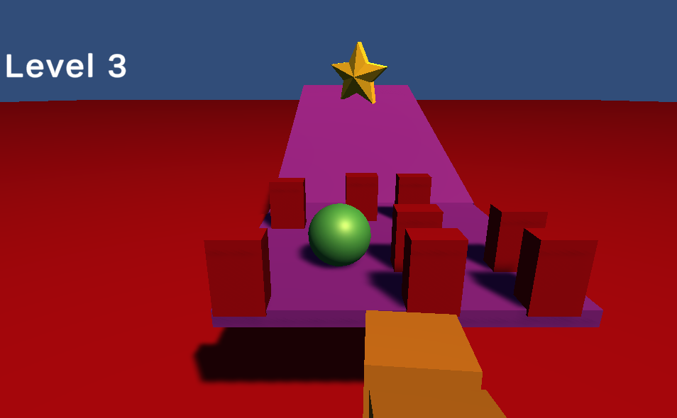
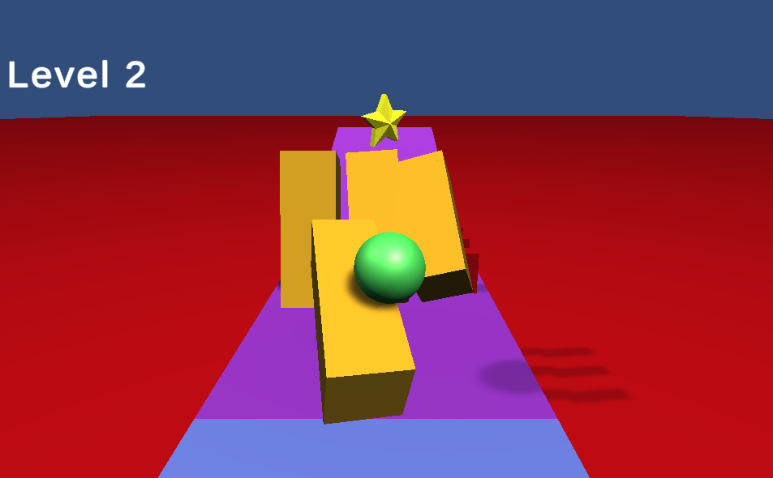
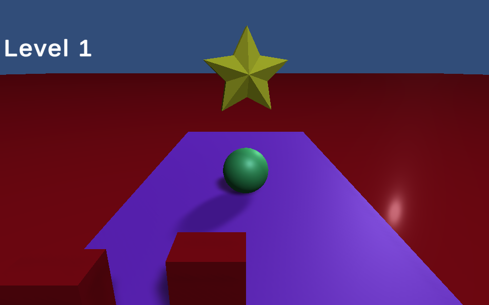
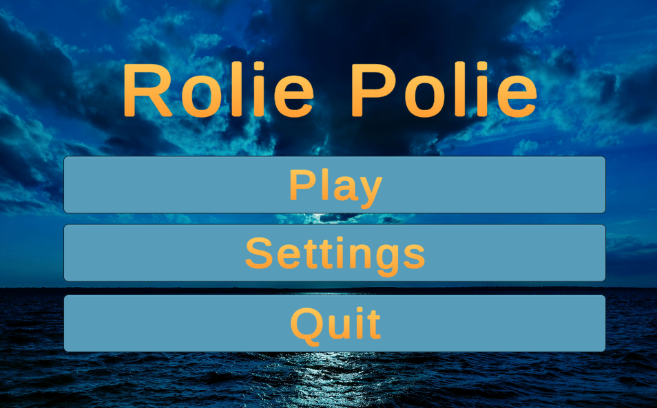
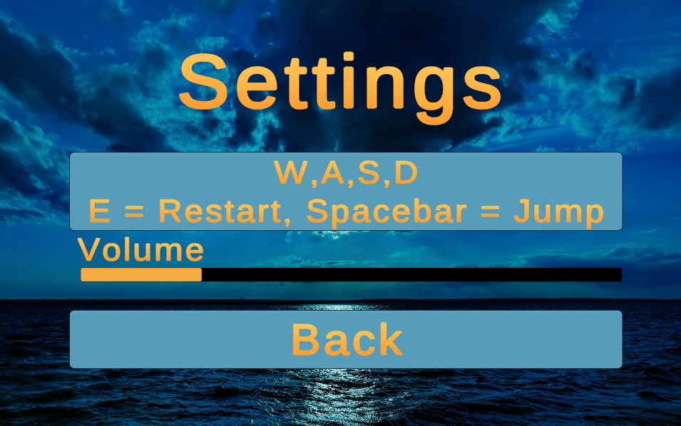

<h1>Rolie Polie</h1>
<h2>A Unity Game</h2>

<h3>Roll Through The Level!</h3>


<h3>Avoid the Red Obstacles</h3>


<h3>Jump on the Blue Platforms</h3>


<h3>Knock over the Yellow Pillars</h3>


<h3>Reach the Star to Beat the Level!</h3>


<h3>Main Menu</h3>


<h3>Settings Screen</h3>



<h2>Play Game Here!</h3>
<a
  href="https://wilsonndaniel.github.io/RoliePolie/">All 7 Levels</a>